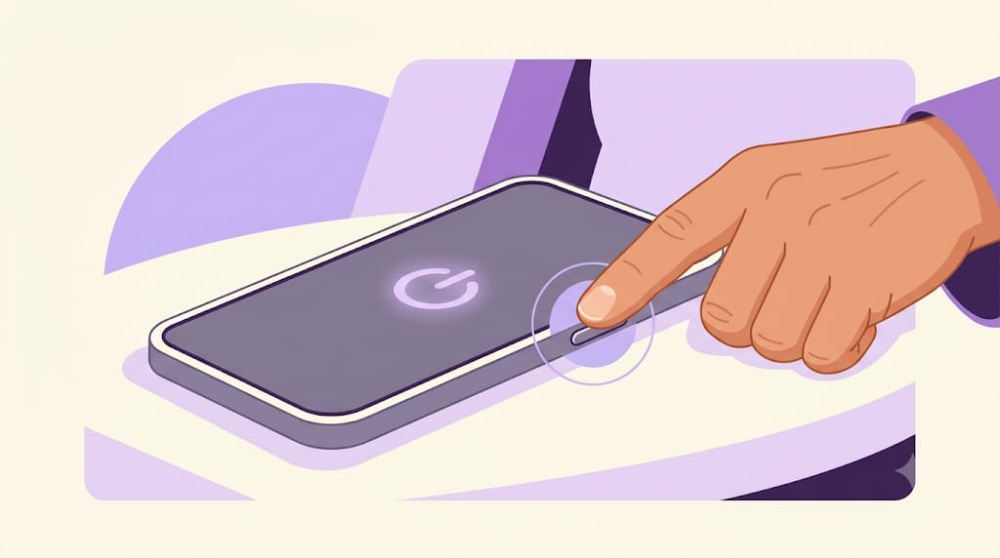
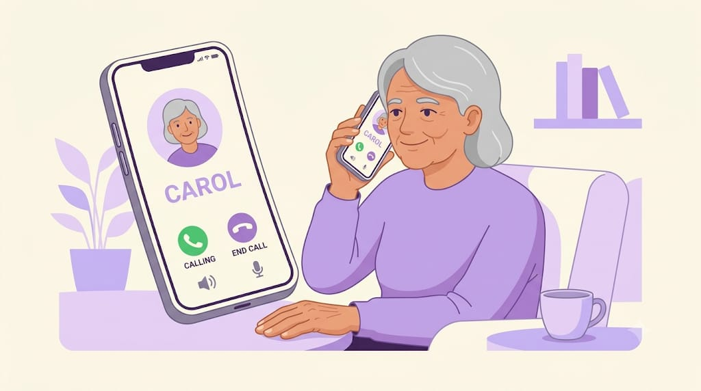
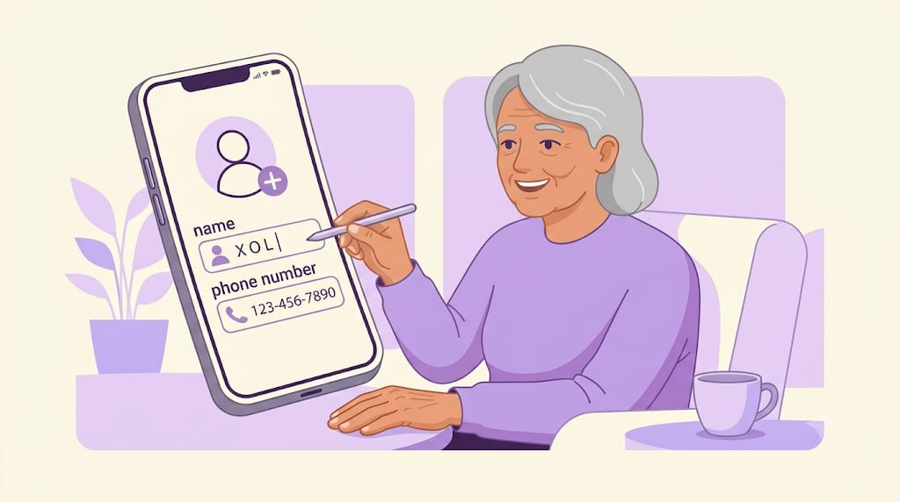
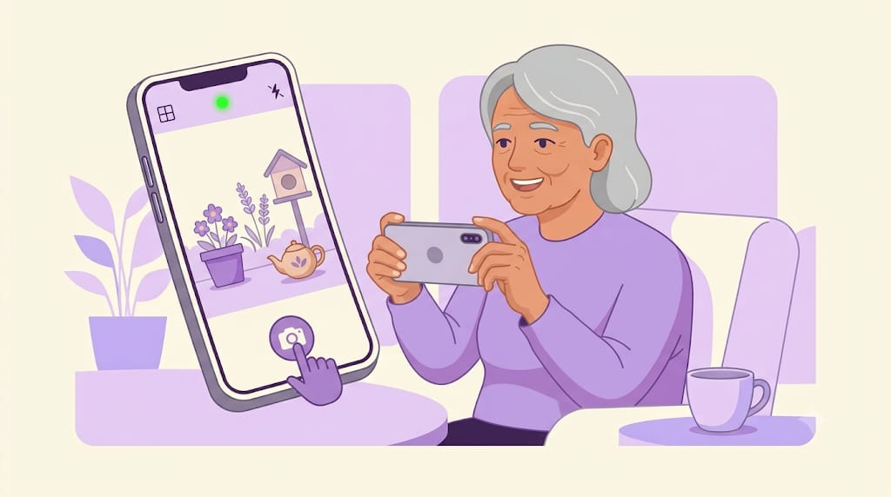

Smartphone Basics
Learn the basic functions of a smartphone step by step.

1. Turn Your Phone On or Off
Press and hold the power button until the phone turns on. To switch it off, press and hold the power button and choose the power off option.

2. Make a Call
Open the Phone app, choose a contact or enter a phone number, and tap the call button.

3. Save a Contact
Open Contacts, select Add Contact, enter the person's name and phone number, then save it.

4. Use the Camera
Open the Camera app, point your phone at the subject and tap the capture button to take a photo.